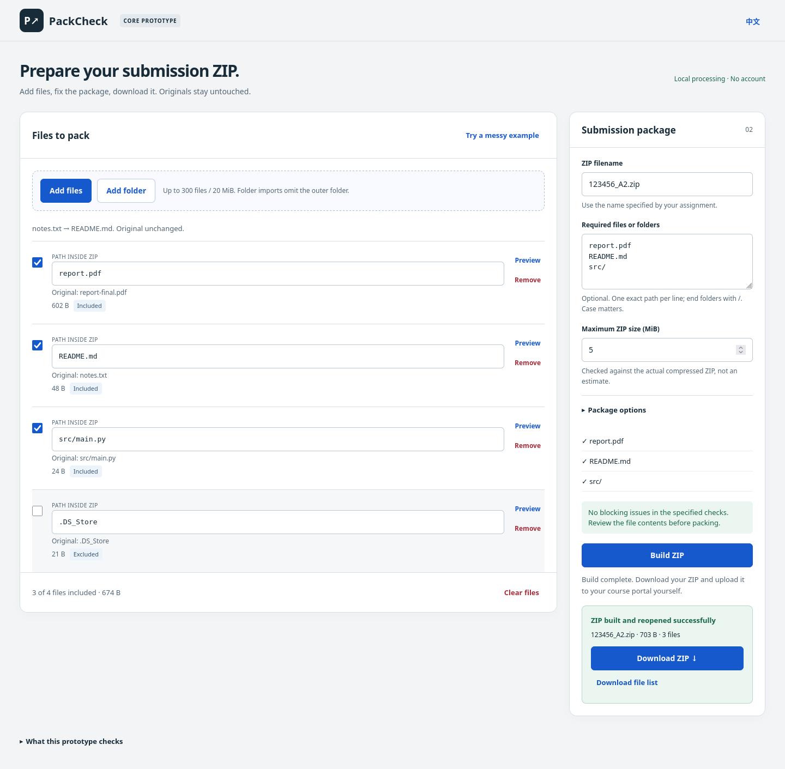

A local workspace for preparing your submission ZIP.

Hold the selected bytes in memory.
Match exact paths and detect conflicts.
A worker compresses the selected files.
Compare every file byte before download.
Prepare a ZIP from your own files.Then upload it to your course portal yourself.